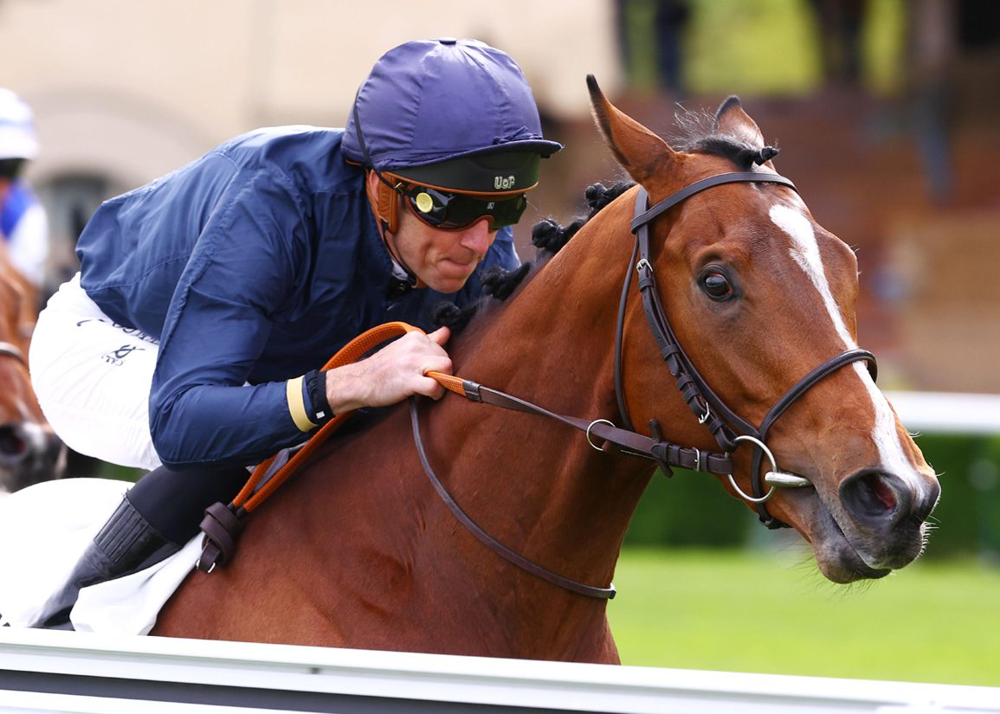

Mauricio Delcher Sánchez estrena cuadra en Chantilly con Pearled Majesty y Christiane Head
El jockey español Mauricio Delcher Sánchez, una de las referencias hispanas del turf europeo en las dos últimas décadas, ultima en Chantilly el debut de su nueva etapa como entrenador. Pearled Majesty será el primer ejemplar que parta en carrera con su licencia, en una operación que le asocia además con Christiane…

Foto: thoroughbreddailynews.com
El jockey español Mauricio Delcher Sánchez, una de las referencias hispanas del turf europeo en las dos últimas décadas, ultima en Chantilly el debut de su nueva etapa como entrenador. Pearled Majesty será el primer ejemplar que parta en carrera con su licencia, en una operación que le asocia además con Christiane Head, copropietaria de la potra y miembro de una de las grandes sagas del turf francés.
Trascendió que el último gazon de la potra antes de su primer corredor se realizó el pasado martes en Chantilly, en una de las pistas con las que el equipo trabaja la puesta a punto del ejemplar. La asociación con Christiane Head, hermana del entrenador Freddy Head y heredera del legado de Alec Head, supone un respaldo simbólico relevante para la apertura del proyecto profesional del español al otro lado de los Pirineos.
Delcher Sánchez completó una larga trayectoria como jockey en España, Francia, Reino Unido y Sudamérica antes de iniciar la reconversión como entrenador, una transición habitual en el turf europeo y especialmente arraigada en el polo de Chantilly. La elección de la sede francesa, una de las capitales mundiales de la preparación de purasangres de carreras, sitúa al español en un entorno de máxima exigencia profesional desde el primer día.
El debut como entrenador de Delcher Sánchez añade otra firma española al elenco de profesionales del turf con cuadra propia fuera del país, en un momento en el que el galope español sigue sumando representación internacional a través de jinetes, preparadores y propietarios afincados en las grandes capitales europeas y americanas del sector.
— Redacción de Galope al Día